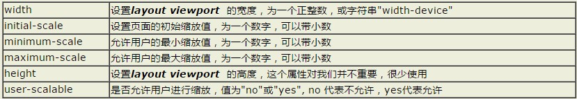

分享人：冯馨雨
目录
1.背景介绍
2.知识剖析
3.常见问题
4.解决方案
5.编码实战
6.扩展思考
7.参考文献
8.更多讨论
现在人们通过手机浏览网页占了大多数，随着浏览方式的改变，网页在webapp下面实现多终端自适应，无论对于避免工程师无谓的重复劳动或者是项目管理的便捷性上来说重要性都是十分巨大的。
在移动设备上进行网页的重构或开发，首先得搞明白的就是移动设备上的viewport了，只有明白了viewport的概念以及弄清楚了跟viewport有关的meta标签的使用，才能更好地让我们的网页适配或响应各种不同分辨率的移动设备。
1.viewport的概念？
2.css中的1px等于设备的1px吗？
3.如何利用meta标签对viewport进行控制？
通俗的讲，移动设备上的viewport就是设备的屏幕上能用来显示我们的网页的那一块区域，在具体一点，就是浏览器上(也可能是一个app中的webview)用来显示网页的那部分区域，但viewport又不局限于浏览器可视区域的大小，它可能比浏览器的可视区域要大，也可能比浏览器的可视区域要小。在默认情况下，一般来讲，移动设备上的viewport都是要大于浏览器可视区域的，这是因为考虑到移动设备的分辨率相对于桌面电脑来说都比较小，所以为了能在移动设备上正常显示那些传统的为桌面浏览器设计的网站---
移动设备上的浏览器都会把自己默认的viewport设为980px或1024px（也可能是其它值，这个是由设备自己决定的），但带来的后果就是浏览器会出现横向滚动条，因为浏览器可视区域的宽度是比这个默认的viewport的宽度要小的。下图列出了一些设备上浏览器的默认viewport的宽度。
在css中我们一般使用px作为单位，在桌面浏览器中css的1个像素往往都是对应着电脑屏幕的1个物理像素，这可能会造成我们的一个错觉，那就是css中的像素就是设备的物理像素。但实际情况却并非如此，css中的像素只是一个抽象的单位，在不同的设备或不同的环境中，css中的1px所代表的设备物理像素是不同的。
还有一个因素也会引起css中px的变化，那就是用户缩放。例如，当用户把页面放大一倍，那么css中1px所代表的物理像素也会增加一倍；反之把页面缩小一倍，css中1px所代表的物理像素也会减少一倍。
移动设备默认的viewport是layout viewport，也就是那个比屏幕要宽的viewport，但在进行移动设备网站的开发时，我们需要的是ideal viewport。那么怎么才能得到ideal viewport呢？这就该轮到meta标签出场了。 我们在开发移动设备的网站时，最常见的的一个动作就是把下面这个东西复制到我们的head标签中：
该meta标签的作用是让当前viewport的宽度等于设备的宽度，同时不允许用户手动缩放。也许允不允许用户缩放不同的网站有不同的要求，但让viewport的宽度等于设备的宽度，这个应该是大家都想要的效果，如果你不这样的设定的话，那就会使用那个比屏幕宽的默认viewport，也就是说会出现横向滚动条。 这个name为viewport的meta标签到底有哪些东西呢，又都有什么作用呢？
meta viewport 标签首先是由苹果公司在其safari浏览器中引入的，目的就是解决移动设备的viewport问题。后来安卓以及各大浏览器厂商也都纷纷效仿，引入对meta viewport的支持，事实也证明这个东西还是非常有用的。 在苹果的规范中，meta viewport 有6个属性(暂且把content中的那些东西称为一个个属性和值)，如下： 
把当前的viewport宽度设置为 ideal viewport 的宽度!要得到ideal viewport就必须把默认的layout viewport的宽度设为移动设备的屏幕宽度。因为meta viewport中的width能控制layout viewport的宽度，所以我们只需要把width设为width-device这个特殊的值就行了。
关于meta viewport的更多知识
感谢大家观看
BY : 黄国保|冯馨雨